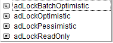

MS Access
Rymowanek o Accessie,
Strasznie pisać nie chce się,
Więc króciutko, najważniesze,
Funkcje najatrakcyjniejsze.
Jak zbudować połączenie?
Gwarantuję powodzenie.
Rekord zaktualizować?
Jak recordset precyzować?
jak go potem przefiltrować?
Do Excela go skopiować?
'budujemy połączenie z bazą
Public Function GetCon() As ADODB.Connection
Dim sCounter As Integer
On Error Resume Next
GetConnMainLinked.Close
On Error GoTo 0
Set GetConnMainLinked = Nothing
sPath = ścieżka z "\" na końcu
SFname = "nazwa bazy z rozszerzeniem"
Set GetConnMainLinked = New ADODB.Connection
With GetConnMainLinked
Provider = "Microsoft.ACE.OLEDB.12.0"
.ConnectionString = "Data Source=" & sPath & sFName & ";Persist Security Info=False"
.CursorLocation = adUseClient
On Error Resume Next
Do
err.Clear
.Open
sCounter = sCounter + 1
Loop Until sCounter = 100 Or err.Number = 0
If err.Number = 0 Then Exit Function
On Error GoTo 0
End With
MsgBox "Błąd przy otwieraniu bazy ;/", vbExclamation + vbOKOnly
End Function
Private Function ZnajdźWBazie()
Dim myConn As ADODB.Connection
Dim myRs As ADODB.Recordset
Dim queryConn As ADODB.Connection
Dim reqCounter As Integer
Set myConn = GetCon 'opisana wyżej
Set myRs = New ADODB.Recordset
With myRs
.ActiveConnection = myConn
.source = "SELECT * FROM Tabela WHERE KolumnaA='a';"
.CursorType = adOpenStatic
.LockType = adLockReadOnly 'locktype, są
.Open
End With

If myRs.RecordCount <> 1 Then
MsgBox "coś poszło nie tak", vbExclamation + vbOKOnly
myRs.Close
Set myRs = Nothing
myConn.Close
Set myConn = Nothing
Exit Function
End If
Do Until myRs.EOF Or ofsset = 10000
sheets(1).Range("A2").Offset(ofsset, 0).Value = myRs.Fields(1).Value
sheets(1).Range("B2").Offset(ofsset, 0).Value = myRs.Fields(3).Value
sheets(1).Range("C2").Offset(ofsset, 0).Value = myRs.Fields(5).Value
myRs.MoveNext
ofsset = ofsset + 1
Loop
' albo sheets(1).range("a2").copyfromrecordset myRs
myRs.Close
Set myRs = Nothing
myConn.Close
Set myConn = Nothing
End Function
'najprostsza wersja recordset update, chyba
Sub UpdateRS()
Dim sqlStatement As String
Dim myConn As ADODB.Connection
Dim myRs As ADODB.Recordset
Set myConn = GetConn
'string to get record from DB
sqlStatement = "SELECT * FROM [nazwaTabeli] " & _
"jakaśkolumna=" & 1000 & ";" ' tysiąc jest bez ', bo jest liczbą, tylko stringi zamykamy w ''
Set myRs = New ADODB.Recordset
myRs.Open sqlStatement, myConn, adOpenKeyset, adLockOptimistic
If myRs.RecordCount = 1 Then
myRs.Update "nazwa pola", wartość 'powiedzmy, że activeworksheet.cells(1,1).value
myRs.Close
Else
msgbox "więcej niż jeden rekord", vbCritical + vbOKOnly
End if
Set myRs = Nothing
myConn.Close
Set myConn = Nothing
End Sub